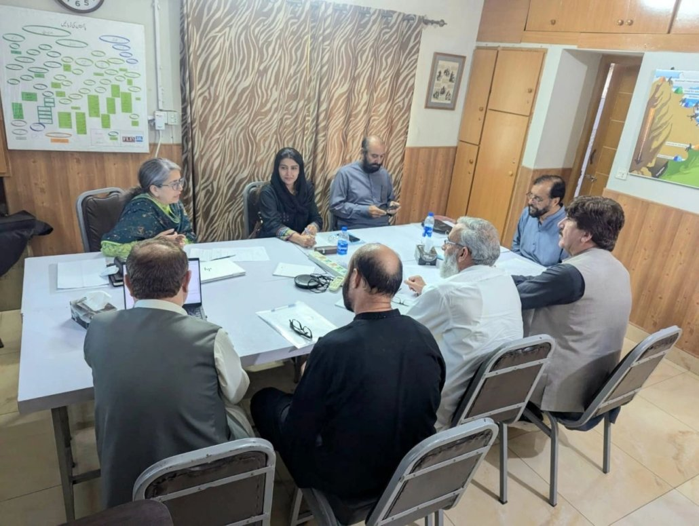

Governance
FLI Executive Board Meeting
The Executive Board convened on 10 October 2026 to review FLI’s progress and deliberate on governance, institutional strengthening and sustainability.
Islamabad
Read story →